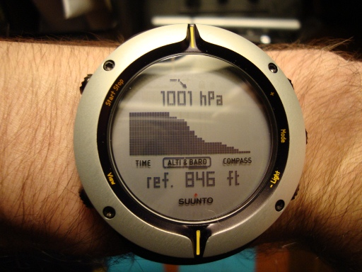

Posts
This post marks the first post in a new category that I am calling gear reviews. While I'm calling it "reviews" I expect most of it will merely be considerations, impressions, and comments. Two months ago I purchased a Suunto Core Extreme Edition Silver ABC (an altimeter, barometer and compass). When I was hiking in Maine this last summer I found myself pouring over the trail maps constantly attempting to assess my current location more accurately. I realized that without knowing an approximate elevation that my guess was that and only that -- a guess.
There are two methods of electronic measurement that can provide elevation estimates. The least expensive and more popular method is that of the ABC which uses barometric pressure to approximate altitude. One positive aspect of this method is that you also end up carrying around a miniature weather station that can provide ample warning of incoming low pressure systems which can potentially care precipitation. Conversely, these same changes in pressure that occur due to large air masses flowing over the landscape can cause the altimeter and barometer readings to be largely inaccurate. It is because of this that an accurate altitude reading depends greatly on the frequency and consistency of calibration. Many GPS-based watches provide an altitude reading, but these are often intentionally scrambled for safety precautions and are often less accurate than ABC devices. The most advanced devices use both a pressure sensor and GPS to constantly calibrate and approximate elevation.

Most wrist-based altimeters have an enormous faceSuunto has made an plethora of different varieties of it's Core model. The first ABC I purchased was a HighGear Alterra from Campmor. Not only was it sent to me with a dead battery, but the altimeter and barometer did not even work! I was sent a dead watch. From the appearance of the box, it looked like it had been relaxing in a warehouse for years. I decided that I had to take my game to the next level. If I have learned one thing from spending oodles of money on outdoor gear it's that you must make price not an objective. It's better to search for gear that you like, or that is of high quality, then worry about finding a good deal on it.
With that in mind, I began to scope out deals on Suunto Core watches. I eventually made a purchase of an all-black military design with a negative display. The watch performed and worked wonderfully, but it was terribly hard to read in most lighting scenarios. It was for this reason that I exchanged it for the Suunto Core Extreme Edition Silver. This watch has a much more modest face that is a bit less thick than the normal core edition and lacks most of the distractions of the normal Core face. Setting up the Core is so easy. I didn't even have to read the manual. It has a limited set of functions, but they are all intuitive and easy to use. Some of the reset actions are not as intuitive as the normal user interface browsing, but all in all it's a terrific interface. Contrast this with the interface on the Alterra which had far too many features to ever be easy to use. Extra ski chronometers and excessive alarms further complicates setup on the Alterra.
The major pros of the Suunto Core include a disturbingly accurate altimeter and barometer, an easy to read face, the storm alarm, and the directional compass. I am never more than 1hPa off from the measurements made at the nearby airport and the altimeter accuracy of 1m typically leads to results within 5-10ft of the true elevation. The storm alarm has successfully beeped at me before more than three quarters of most significant snowfalls here in Kentucky. Using the directional compass assisted me in some field work I had to do for a project that I recently finished focusing on landslides in the region. Cons are few and far between. The primary downside to this timepiece is it's enormous face. This is common amongst ABC watches, though. I would like to see a dual-alarm setup that would allow for both a morning and afternoon alarm, as well.
Bottom line: I can't wait until I get to try this thing out on a few real trips. I've been adding significantly to my winter gear collection and hope to do a few winter trips this year along with a few other "big" trips which are still coming together. Suunto did a wonderful job on this upgrade to their already successful Core line.
Over ten years ago the Internet was more of a playground for me than anything else. I would spend time downloading small games (often less than a megabyte), cool pictures, and, of course, music. Since audio compression technology had quite a way to come before we could fool users into thinking that a 3MB audio file was just as acceptable as a lossless waveform and the majority of users were entering the information superhighway using a dial up connection, MIDI files were prolific. I collected them, often searching for one where someone had merged just the right kinds of fake instrument sounds to give it somewhat of a semblance to the original song. People were making MIDI files of everything from the Pokemon theme song to "Tearin' Up My Heart" by *Nsync. It was exciting at the time.
MIDI files had one huge downside: they depended almost entirely on your sound card and your soundfont. Getting a new sound card or a new computer would make your MIDI files sound different. It surely made for an interesting time when your favorite MIDI file suddenly sounded less awesome. MIDI has been around a long time and it's an amazing protocol but it was simply never meant to be used to share songs. The real purpose of MIDI is to provide a standard transport protocol for musical data. This most often applies to digital keyboards, though other instruments often utilize MIDI as well.
Most mid to high-end digital keyboards have a MIDI connection (either a classic connection or the now more favored USB pass through). The major downside to most affordable digital pianos is that they just do not sound like a piano. In order to provide a more affordable alternative to purchasing that Steinway D, massive sample-based virtual instruments began to appear on the market. When I say massive, I mean huge. Absolutely huge. 10+ DVD huge. Often, publishers of the software recommend a dedicated hard disk. The amount of disk reads that are initiated by such software can be taxing as well. There are sample libraries available for a range of instruments. Two popular sample libraries that are at least moderately affordable are Alicia's Keys and Synthogy Ivory.
I had become somewhat disappointed with the provided pianos on my Casio Privia PX575-R and began to consider a purchase of a sample library. Unfortunately, all of the available sample libraries are Mac and Windows based and offer no Linux friendly alternative. Research led me to an interesting piece of software known as Pianoteq. After a remarkably quick download of their trial software I just looked at the executable. My desktop was populated with a 10MB executable. What I had neglected to read before I hastily downloaded the trial was that Pianoteq was different. Rather than providing a massive sample library, Pianoteq aims to model a piano. There are no pre-existing sounds in the program at all. I was impressed by the sounds of the grand pianos and the processor usage remained quite low. I had little issues with latency since I already sport a JACK-ready setup with realtime scheduling support.
 10MB piano?
10MB piano? After being annoyed with the trial and its disabling of certain keys (along with a 20 minute time limit) I thought it was a sign that enough was enough so I forked over the cash for the program. It's about $100USD which I consider to be highly affordable for such software. I think the biggest implication of such software is that it allows those searching for a keyboard to buy simply on the feel of the keyboard (action, keys, etc) rather than the sound of the keyboard. I wish I had known of this possibility since it may have altered my purchase slightly to a Privia PX-3 or PX-130.
I came across a song called "River Flows In Yoi" by Yiruma on Youtube while perusing some piano playlists at work and found myself attracted to it. It's not the simplest song to play, but it does have a remarkably simple structure resembling that of many pop-rock songs. After I had already spent quite a bit of time teaching myself, I came to realize that this song must be more popular than 99% of the music I listen to. There literally must be an upload an hour of someone playing this song on Youtube. Somehow the song was associated with the Twilight series and I imagine that a lot of this interest surrounds this accidental association with the vampiric teen hit. Despite all of this, I still like it. It was a good test for Pianoteq, at the least.
Without doubt, it is more enjoyable to play a piano that sounds more realistic. It's more expressive and responds to the player just as much as the player responds to the piano. While there may be a few people who would be fooled by a modeled piano, I think that a real piano still cannot be replaced. Sample-based software surely has a more realistic sound, but the modeled pianos have many more interaction paths and each note can affect each other note in a way that sample-based libraries can never replicate. We've come a long way since 8-bit music on Super Mario Brothers and MIDI files of the Backstreet Boys latest hit, but I don't expect to fool many listeners with a modeled piano yet.
In the home I grew up in music was everywhere. Both my mother and my father are musically gifted and both pursued their love of music when they attended college. Four years was, evidently, not enough for my father and he completed a graduate degree in music composition. As a young child I spent many hours sitting on a piano bench making compositions of my own. For some reason, my two sisters and I had a different relationship with music than our parents. All of us participated in band for a minimum of three years and learned to play instruments and read music. For all three of us, this three year internment was the extent of our formal musical journeys. My younger sister dabbled in piano lessons but for a decidedly brief period of time. Despite our choices to veer away from a life invested in the study of music, I believe that all of us still have a special relationship with it in some form or another.
Ever since I can remember, I would occasionally spend time sitting in front of our old, out of tune, and poorly maintained piano. As a young child I would even throw together sequences of notes that I would then repeat and modify to form somewhat of a pseudo-composition. For whatever reason, I always refused formal lessons. I simply didn't want the act of playing the piano to become a chore or a burden. Once I grew older, I shifted my focus toward movie scores and themes. To this day, I could probably play the chorus for a handful of movie themes off the top of my head. Playing the piano was simply a way to pass some time and provide myself with a sense of accomplishment.
Music has always captivated and affected me in a way that I feel few others experience. I find it nearly impossible to listen to an album from start to finish. I am far more likely to become enamored with the dynamics and sounds of a single song, or, in extreme circumstances, a section of a song. Take, for example, Dream Theater's "Home" from Metropolis Pt. 2: Scenes From A Memory. Few songs in my library can approach this song when comparing total plays. This obsession I develop leads to days, perhaps even weeks, where I find myself listening to the same few songs repeatedly until I know them intimately. Whether it be Jimmy Eat World's "For Me This Is Heaven", Death Cab For Cutie's "Brother's on a Hotel Bed", or one of many versions of "The Ponytail Parades" by Emery, there were times when I probably had the song on repeat for the better part of a week. It surely drives anyone around me insane, but for me each time the song plays I gain a better understanding of it. It is rare for this to lead to song exhaustion and it is even more unlikely for me to ever "retire" a song.
More than once I have entertained the idea of providing myself with the means to become a bit closer to music. While hiking through the wilderness of Maine I decided to give in and satisfy my curiosity. Those who know me well know that I am, at times, obsessively frugal. To make a long story short, it's hard to part me from my hard earned paycheck. Fortunately, I had already made a decision and I began to research digital pianos and electric keyboards. It quickly became obvious that I would settle for no less than weighted hammer-action keys. My hands had spent far too much time on a real piano and the disgusting feel of spring-loaded keys were more than enough to convince me that it was worth it to spend the extra money for great feeling, responsive keys. Through online research I had found that the (now discontinued) Casio Privia PX-575R's were available from multiple outlets (Guitar Center, Sam Ash) as factory refurbished models that were more than affordable. After testing one in person I was quite sure that it was the best keyboard for the money I was willing to spend. Last week I finally bit the bullet and found myself shoving a coffin-sized box into my rather small 1992 Toyota Celica. As I drove home with the gargantuan box blocking my passenger side rear view mirror I had a handful of moments where I wondered what exactly I was doing.
 Isn't it pretty?
Isn't it pretty? So, why the piano? I could have bought a guitar, or a set of drums, or a variety of other instruments. For me, it was a simple decision. I always felt more comfortable on the piano. I played trombone for a time and it just didn't do much for me. The piano is adaptable and can take on a variety of different sounds that convey a spectrum of emotions. Many of my favorite songs feature a piano to some degree. "Existentialism on Prom Night" by Straylight Run, "Agaetis Byrjun" by Sigur Ros, or "Forever" by Amber Pacific are all examples of this. The digital piano also gives me the options to generate over 700 unique sounds supported by over 100 rhythms.
Once I had it all setup I had to engage in a small battle with ALSA (Advanced Linux Sound Architecture) which resulted in proper piping of audio output through my computer thanks to the amazing longevity of my Audigy 2 ZS. I received the sound card as a graduation gift from high school. For computer hardware, it's age is akin to that of a gray-haired retiree living in Florida. Despite being old, the Audigy 2 ZS has been nothing short of astounding since the first day I used it. It continues to satisfy my needs and allows me to do a much cleaner recording than with a microphone or a standard line in that is found on most sound cards. Audacity works quite well for audio capture and simple tracking and I have found that using the command line based alsamixer utility is more than adequate for my needs. Having the audio piped through a workstation is very beneficial. I can record, track, play songs in the background, and have access to a much cleaner capture quality.
 I love my Audigy 2 ZS!
I love my Audigy 2 ZS! I decided to work on learning a song and I chose the main theme from the new series "The Pacific". I wasn't impressed with the series itself, but the main theme captivated me. The series has a beautiful score. I know my version doesn't do it justice, so be sure to check out the version by CalikoCat.
So far, I have enjoyed my investment quite a bit and I look forward to learning to play it better.